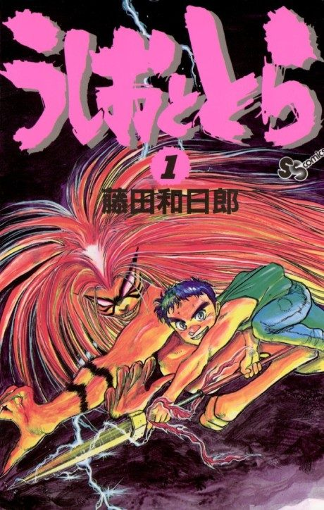

Ushio and Tora (TV)
うしおととら (TV)
The anime covers the whole manga.
7.3AniList score
—Animeter, no votes yet
39episodes, 2 seasons
Anime finished. Where does the manga pick up?
StatusFully adapted
The 39-episode 2015-2016 series covers the entire manga storyline (condensed).
1313
Ushio and Tora 2 (TV)